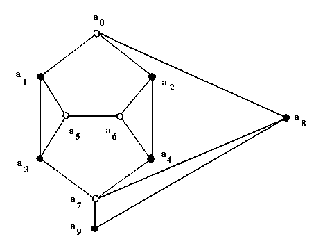

Supplement to The Kochen-Specker Theorem
Proof of Step 1
A given point a0 on the unit sphere E uniquely picks out a unit vector from the origin to a0 which in turn uniquely picks out a ray in R3 through the origin and a0. We here work with unit vectors, since this involves no loss of generality. We write a0, a1, … for points and u(a0), u(a1), … for the corresponding unit vectors. We call a KS diagram realizable on E, if there is a 1:1 mapping of points of E, and thus of vectors in R3, to vertices of the diagram such that the orthogonality relations in the diagram — namely, vertices joined by a straight line represent mutually orthogonal points — are satisfied by the corresponding vectors.
We now show (see Kochen and Specker 1967: , Redhead 1987: 126):
If vectors u(a0) and u(a9), corresponding to points a0 and a9 of the following ten-point KS graph Γ1 are separated by an angle θ with 0 ≤ θ ≤ sin−1(1/3), then Γ1 is realizable.

Figure 4: Ten-point KS graph Γ1
Suppose that θ, the angle between u(a0) and u(a9), is any acute angle. Since u(a8) is orthogonal to u(a0) and u(a9), and u(a7) also is orthogonal to u(a9), u(a7) must lie in the plane defined by u(a0) and u(a9). Moreover, the direction of u(a7) can be chosen such that, if φ is the angle between u(a0) and u(a7), then φ = π/2 − θ.
Now, let u(a5) = i and u(a6) = k and choose a third vector j such that i, j, k form a complete set of orthonormal vectors. Then u(a1), being orthogonal to i, may be written as:
u(a1) = (j + xk) (1 + x2)−½
for a suitable real number x, and similarly u(a2), being orthogonal to k, may be written as:
u(a2) = (i + yj) (1 + y2)−½
for a suitable real number y. But now the orthogonality relations in the diagram yield:
u(a3) = u(a5) × u(a1) = (-xj + k) (1 + x2)−½
u(a4) = u(a2) × u(a6) = (yi − j) (1 + y2)−½
Now, u(a0) is orthogonal to u(a1) and u(a2), so:
u(a0) = u(a1) × u(a2) / ( | u(a1) × u(a2) | ) = (-xyi + xj − k) (1 + x2 + x2 y2)−½
Similarly, u(a7) is orthogonal to u(a3) and u(a4), so:
u(a7) = u(a4) × u(a3) / ( | u(a4) × u(a3) | ) = (-i − yj − xyk) (1 + y2 + x2 y2)−½
Recalling now that the inner product of two unit vectors just equals the cosine of the angle between them, we get:
u(a0) u(a7) = cos φ = xy[(1 + x2 + x2 y2) (1 + y2 + x2 y2)]−½
Thus:
sin θ = xy[(1 + x2 + x2 y2) (1 + y2 + x2 y2)]−½
This expression achieves a maxium value of 1/3 for x = y = ±1. Hence, the diagram is realizable, if 0 ≤ θ ≤ sin−1(1/3), or, equivalently if 0 ≤ sin θ ≤ 1/3.